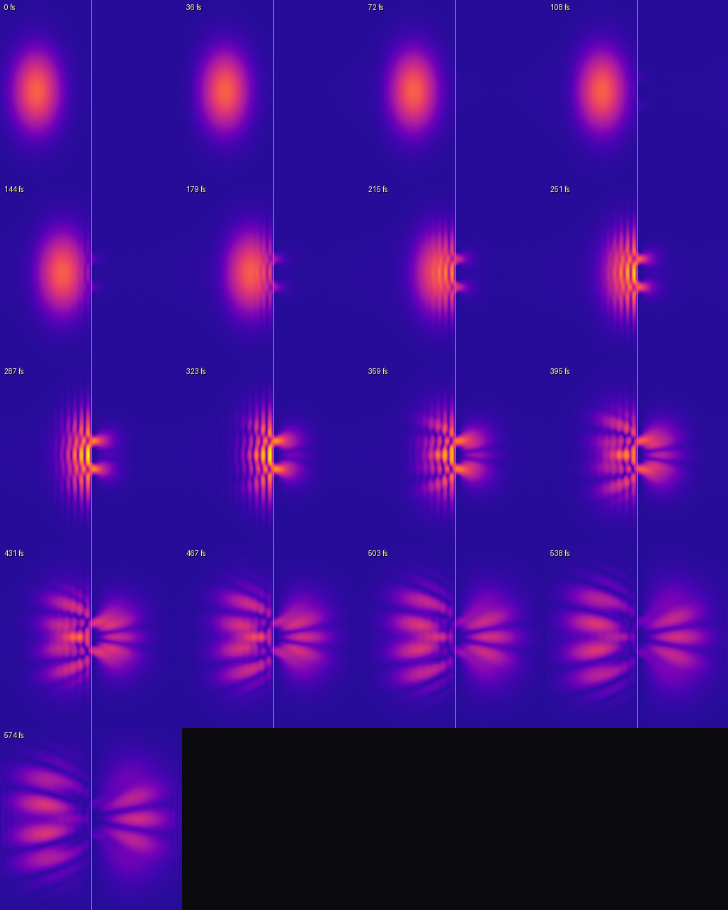
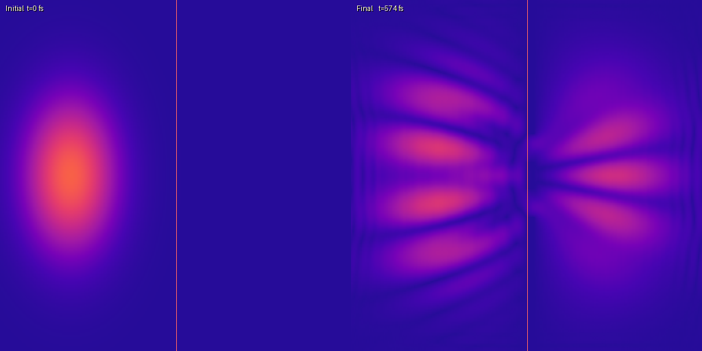
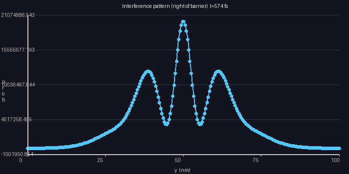
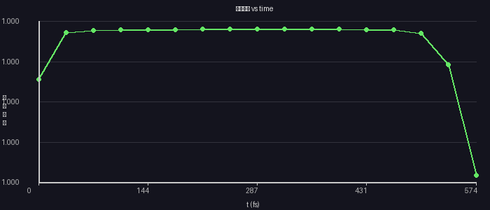

🔬 Python Reference (split-operator, 256×256, same parameters)
17 snapshots · t = 0 → 575 fs · ‖ψ‖² conserved to <0.01%
All time-steps grid (Python / NumPy)

Initial → Final comparison (Python)

Interference y-profile after barrier (Python)

‖ψ‖² vs time — norm conservation (Python)

💡 Use 🗺 2D Flat View in the simulation above to get the same top-down heatmap
view as shown here. The plasma colormap and gamma=0.35 are identical to the Python figures.